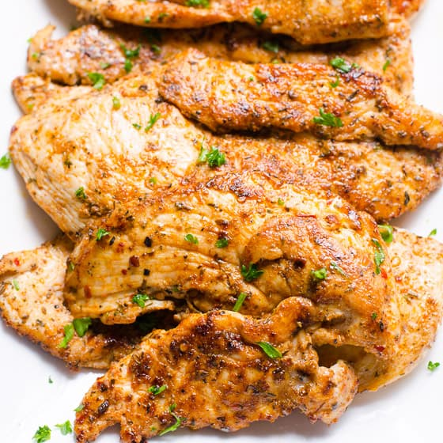

Cajun Chicken

Uncaged & Kickin' Cajun Chicken recipe
This dish'll make you wish you had a bigger belly.
Each bite is better than the last and by the time you're
done, you'll be lickin' that plate clean. Best served with rice.
Ingredients
- 2 Cups Vegetable Oil
- 2 Tablespoons Cajun Seasoning
- 2 Tablespoons Dried Italian-Style Seasoning
- Garlic Powder to Taste
- 10 Skinless, Boneless Chicken Breast Halves - Pounded to 1/2 Inch Thickness
Directions
- In a big and deep bowl, mix the oil, Cajun
seasoning, Italian seasoning, garlic powder, and lemon
pepper. Stick the chicken in the bowl, and coat with the mixture.
Cover, and refrigerate for 1/2 hour.
- Preheat the grill for high heat.
- Lightly oil the grill gate. Drain chicken, and discard marinade. Place chicken on hot grill and cook for 6 to 8 minutes on each side, or until juices run clear.